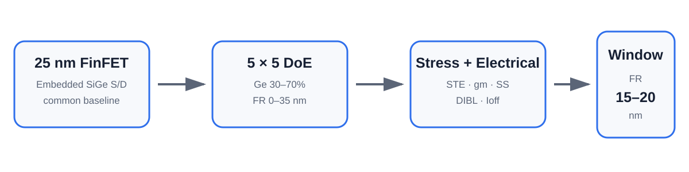
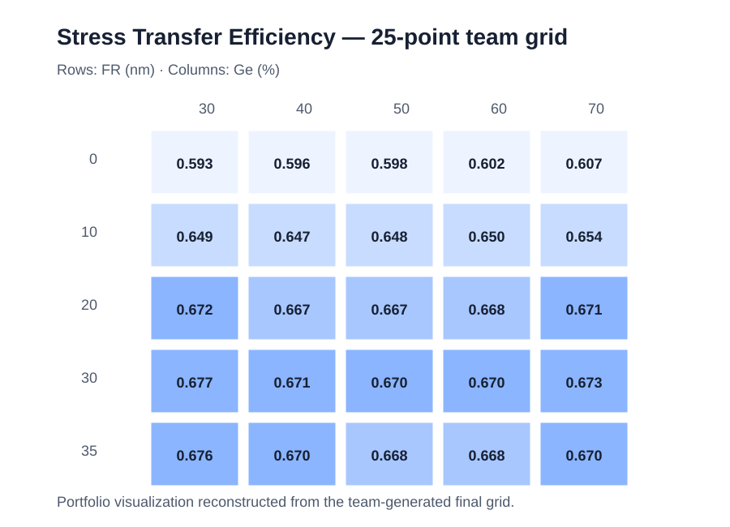

Project summary
Device: 25 nm pMOS FinFET + Embedded SiGe S/D
Variables: Ge 30–70% × FR 0–35 nm
Question: stress input과 실제 channel transfer를 분리해 보고, electrical penalty가 급증하기 전 공정 창을 찾을 수 있는가?
Conclusion: FR 15–20 nm
Maximum stress가 아니라 useful process window를 찾는 문제
Embedded SiGe S/D는 pMOS channel에 compressive stress를 전달해 drive performance를 높일 수 있지만, Ge 조성과 recess depth를 계속 키우면 leakage와 electrostatic-control penalty도 커질 수 있습니다. 이 프로젝트는 absolute stress, normalized STE, and electrical metrics를 한 설계공간에서 함께 비교했습니다.
Ge 30%·40% 두 열, 총 10개 core TCAD points 직접 수행
Team-wide conclusions, final STE definition, refinement runs, and statistical analysis are presented as collaborative results rather than individual work.
STE는 FR 약 20 nm까지 상승한 뒤 포화

Team-generated 2-D map and trade-off figures


Ge=50% refinement identifies FR 15–20 nm
| FR | STE | gmSat | SSlin | Ioff_norm |
|---|---|---|---|---|
| 15 nm | 0.660 | 1.143e-4 | 82.2 | 5.26e-10 |
| 20 nm | 0.667 | 1.149e-4 | 84.7 | 9.68e-10 |
| 22 nm | 0.668 | 1.131e-4 | 87.5 | 1.93e-9 |
FR 20→22 nm에서는 STE가 거의 늘지 않지만 gmSat은 감소하고 Ioff는 약 두 배 증가합니다. 따라서 팀은 대부분의 stress-transfer benefit을 확보하면서 penalty 급증을 피하는 FR 15–20 nm를 practical window로 제안했습니다.
Deep recess degradation은 strain만의 문제가 아니었다
Ge=50%에서 Strain_Impact ON/OFF FR sweep을 비교한 결과, strain coupling을 꺼도 SS, DIBL, Ioff degradation이 크게 남았습니다. 팀은 이를 recess geometry에 따른 electrostatic change가 1차 원인이고, strain/band-structure effect가 추가적인 leakage penalty를 만드는 것으로 해석했습니다.